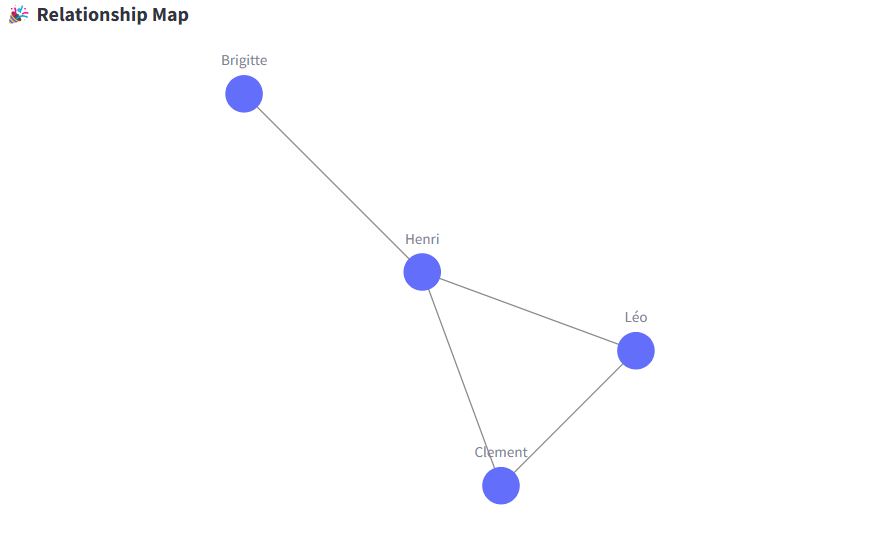

Hi, I'm Henri
Solutions Engineer passionate about building smart and simple solutions.
Slock | Quantitative Portfolio Analyzer
FastAPI, React (Vite), SQLite, Pandas
Full-stack financial dashboard for tracking stock performance, calculating risk metrics (Alpha, Beta, Volatility, RSI), and visualizing unrealized P&L.
Go to Slock App


Relationship mapping - Map your friends to help your parents remember
Python (Plotly, Streamlit)
I am lucky to have made many friends. But it also means that when I tell my mom about them, she keeps forgetting who's who.
So, to draw her a clear picture, I had this idea of mapping my friends as if we'd map processes (#consultingdoesn'tleaveyou).
Feel free to try yourself!You can also see the code on Github with the following link.